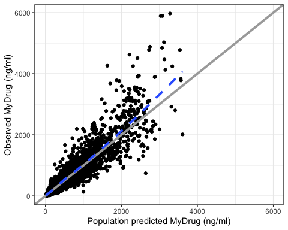
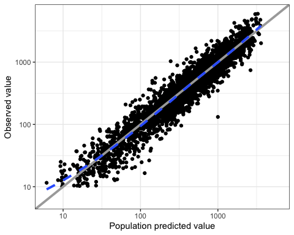
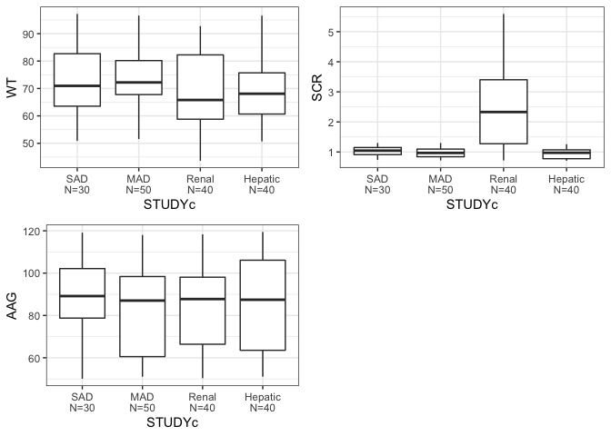
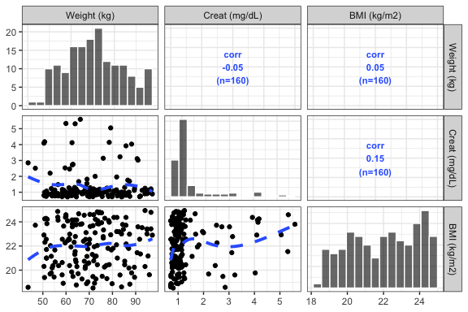

The goal of pmplots is to create exploratory and diagnostic plots commonly used in pharmacometrics.
You can install the released version of pmplots from MPN with:
mpn <- "https://mpn.metworx.com/snapshots/stable/2021-06-20"
install.packages("pmplots", repos = mpn)This installs from a specific, dated snapshot. Please check https://mpn.metworx.com/docs/snapshots/ for the most recent snapshot date.
You can install the development version from GitHub with:
# install.packages("devtools")
devtools::install_github("metrumresearchgroup/pmplots")
library(pmplots)
library(dplyr)
data <- pmplots_data_obs()The default pmplots behavior is to expect names following NONMEM convention, for example DV refers to observed values, PRED refers to population predicted values. With that convention, we can easily make observed versus predicted plots
dv_pred(data, yname = "MyDrug (ng/ml)")
dv_pred(data, loglog = TRUE)
id <- pmplots_data_id()
cont_cat(id, x = "STUDYc", y = c("WT", "SCR", "AAG")) %>% pm_grid()
pairs_plot(id, y = c("WT//Weight (kg)", "SCR//Creat (mg/dL)", "BMI//BMI (kg/m2)"))
A functions and features (code + output) listing is available at pmplots_complete.md.